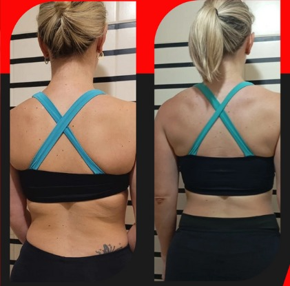
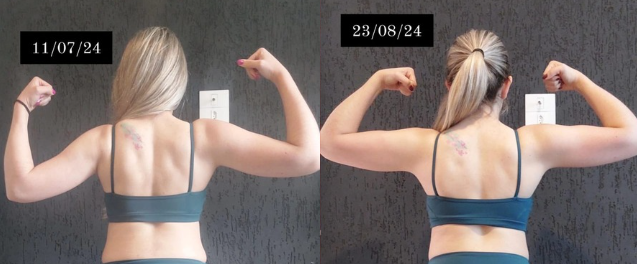
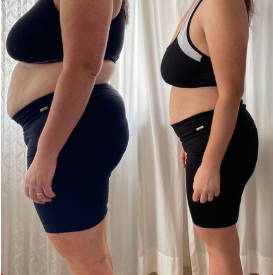

Treinos personalizados, acompanhamento
profissional e o foco que você precisa
para transformar seu corpo e sua mente.
Resultados reais exigem estratégia individual.
Cada treino é planejado de acordo com
seu objetivo, condicionamento e estilo de vida.
Avaliação de rotina, histórico, lesões e objetivo - emagrecimento,
hipertrofia, condicionamento ou qualidade de vida. Antes de prescrever,
eu entendo o seu cenário real.
Plano construido pro seu objetivo, pro seu nível e pra estrutura
que você tem - academia, condomínio, home gym ou aplicativo.
Treino que cabe na sua semana.
Presencial em Curitiba com correção em tempo real (individual ou em duplas).
Online via plataforma com vídeo de cada exercício e
suporte direto comigo no Whatasapp.
Reavaliação programada, ajuste de carga, correção de execução e revisão de objetivo.
Quem evolui é quem mede, ajusta e segue -
não quem treina no automático.
Sou personal trainer em Curitiba e atendo presencial em condomínios, home gym e academias — individual ou
em duplas. Online, atendo o Brasil inteiro via consultoria com treino personalizado e acompanhamento
periódico de resultados. ANOS COMO PERSONAL ALUNOS ACOMPANHADOS PARANÁ
Meu lema é simples: não vendo treino, entrego transformação. A diferença é método. Diagnóstico
individual, criação de rotina sob medida, execução guiada e ajuste constante — pra emagrecimento,
hipertrofia, condicionamento ou qualidade de vida.
Personal trainer pra quem quer resultado. Sem ficha genérica, sem promessa furada, sem fingir que dá pra
mudar corpo sem método. Treino certo aplicado com consistência — é assim que corpo muda.
Resultado de quem trocou treino genérico por br plano certo aplicado com constância. Sem photoshop, sem promessa furada — só estratégia, ajuste e consistência semana após semana

PESO
MASSA MAGRA
GORDURA
“Um resultado impressionante em tão poucos meses! Me sinto até mais confiante. Super recomendo!”

PESO
MASSA MAGRA
GORDURA
“Amei a consultoria, personal super legal e muito atencioso. Foi um resultado muito exclente em apenas 1 mês!!”

PESO
MASSA MAGRA
GORDURA
“Tentei sozinha por anos. Quando entrou plano certo e acompanhamento de verdade, o corpo respondeu em poucos meses.”
Presencial em Curitiba (condomínios, home gym ou academias) — individual ou em duplas — e consultoria online no Brasil inteiro. Você escolhe o formato, eu entrego o método.
Pra quem mora em Curitiba e quer acompanhamento 100% presencial — em condomínio, home gym ou academia. Treino guiado comigo, com correção em tempo real.
Treino personalizado, criação de rotina e acompanhamento periódico de resultados — pra você treinar de qualquer lugar com uma estratégia profissional por trás
Treine presencial em Curitiba acompanhado de quem você quiser — esposa, marido, amigo, irmão. Acompanhamento próximo dividindo o investimento.
Não. O treino é montado de acordo com seu nível atual, seja iniciante ou avançado.
Atendo em condomínios, home gym e academias em Curitiba.
Você recebe um plano personalizado, acompanhamento periódico e suporte para evolução constante.
Sim. Todo o planejamento é adaptado ao seu objetivo específico.
Depende da sua rotina e objetivo. A frequência é definida individualmente.